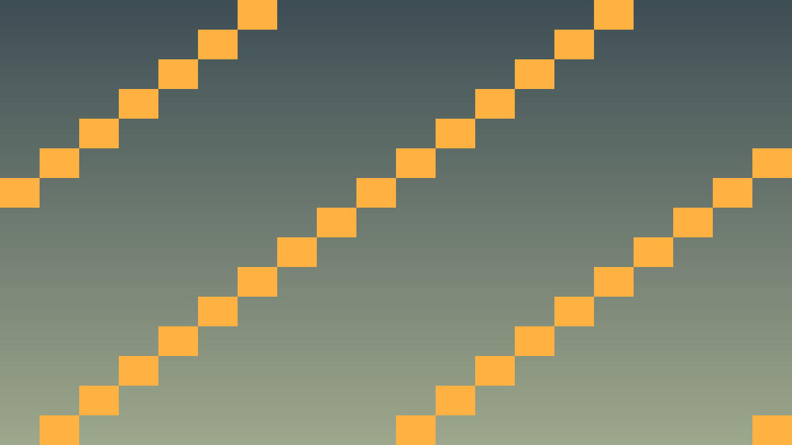

Tavs šīs stundas izaicinājums: Sagatavot C++ izstrādes vidi un kompilatorus, lai varētu rakstīt C++ kodu Godot.
Pirms sāc: izmanto iepriekš apgūto un šīs lapas teorijas/koda piemērus. Ja vajadzīga jauna komanda vai rīks, vispirms atrodi tās paraugu teorijas sadaļā.
GDExtension ir Godot 4 mehānisms, kas ļauj rakstīt C++ kodu, kas darbojas spēlē. C++ kods tiek kompilēts par koplietojamu bibliotēku (.so Linux, .dll Windows, .dylib macOS), ko Godot ielādē izpildes laikā.
Šajā kursā spēles skripti ir C++ klases. SConstruct ir build konfigurācija, termināļa komandas ir tikai rīku palaišana, bet spēles uzvedību rakstām .hpp un .cpp failos.
Kāpēc C++?
Nepieciešamie rīki: C++ kompilators, Python, SCons, Git un godot-cpp bindings. godot-cpp versijai jāatbilst Godot 4 versijai, ko lieto projektā.
# Atkarību instalēšana
# Linux (Debian/Ubuntu):
sudo apt install build-essential scons git python3
# Windows: Visual Studio Community ar "Desktop development with C++"
pip install scons
# macOS:
brew install scons#include <godot_cpp/core/class_db.hpp>
#include "hello.hpp"
using namespace godot;
void initialize_pong_module(ModuleInitializationLevel level) {
if (level != MODULE_INITIALIZATION_LEVEL_SCENE) {
return;
}
ClassDB::register_class<Hello>();
}Atpazīsti šīs stundas galveno ideju un sasaisti to ar gala projektu Pong.
.hpp, .cpp vai Godot scēnas failā, nevis uzreiz lielu funkciju.klases_punkti, zvana_taimeris, pazudusais_markieris vai kafijas_pauze; mazliet humora drīkst, bet kodam jāpaliek skaidram.Izmanto šīs stundas prasmi nelielā, strādājošā projekta daļā.
.hpp, .cpp vai Godot scēnas failā, izmantojot teorijas piemēru kā sākumpunktu.Pārbaudi risinājumu, salīdzini rezultātus un atrodi, ko uzlabot.
Pievieno nelielu radošu uzlabojumu ar klases dzīves piemēru, nepārsniedzot apgūto vielu.
Iestati ērtāku C++ rediģēšanu.
code ..gdext/godot-cpp/include un ģenerētajiem bindings failiem.scons komandu, ko ierakstīji README.pip install --user scons.cd godot-cpp && scons.
// gdext/src/register_types.cpp
#include "register_types.hpp"
#include "hello.hpp"
#include <gdextension_interface.h>
#include <godot_cpp/core/class_db.hpp>
#include <godot_cpp/core/defs.hpp>
#include <godot_cpp/godot.hpp>
using namespace godot;
void initialize_pong_module(ModuleInitializationLevel level) {
if (level != MODULE_INITIALIZATION_LEVEL_SCENE) {
return;
}
ClassDB::register_class<Hello>();
}
void uninitialize_pong_module(ModuleInitializationLevel level) {
if (level != MODULE_INITIALIZATION_LEVEL_SCENE) {
return;
}
}
extern "C" {
GDExtensionBool GDE_EXPORT pong_library_init(
GDExtensionInterfaceGetProcAddress get_proc_address,
GDExtensionClassLibraryPtr library,
GDExtensionInitialization *initialization) {
GDExtensionBinding::InitObject init_obj(get_proc_address, library, initialization);
init_obj.register_initializer(initialize_pong_module);
init_obj.register_terminator(uninitialize_pong_module);
init_obj.set_minimum_library_initialization_level(MODULE_INITIALIZATION_LEVEL_SCENE);
return init_obj.init();
}
}